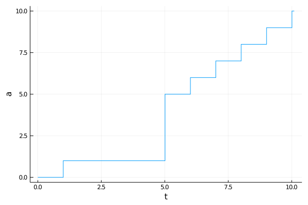
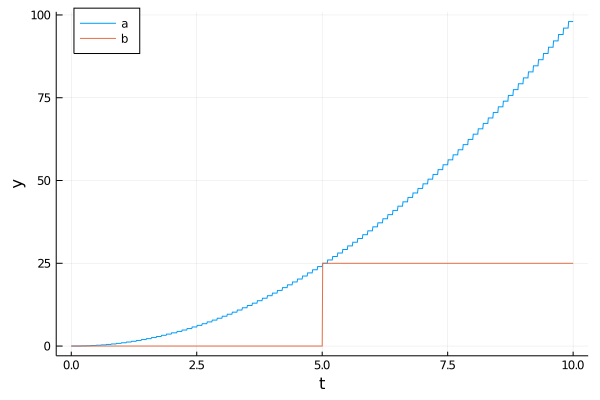

Event Scheduling
In order to represent an event $\,(e_i,t_i): e_i \in \mathcal{E}\,$ we schedule an appropriate action $γ$ to clock at a given time or under a condition. Thereby we introduce a time delay between the creation of an event and its execution.
- Timed events are actions scheduled to execute at a given time,
- Conditional events are actions scheduled to execute when a given condition becomes true.
Events can be scheduled to a clock before or during it is running. But they are executed at their due time only by a running clock.
Timed events
With a clock $C$, an action $\gamma$ and a known event time $t$ we can schedule timed events:
event!(C, 𝜸, t)orevent!(C, 𝜸, at, t): $\hspace{3pt}C$ executes $γ$ at time $t$,event!(C, 𝜸, after, Δt): $\hspace{3pt}C$ executes $γ$ after a time interval $Δt$,event!(C, 𝜸, every, Δt): $\hspace{3pt}C$ executes $γ$ every time interval $Δt$.
There $t$ or $Δt$ can be numbers or Distributions.
using DiscreteEvents, Plots
c = Clock()
a = [0] # a counting variable
x = Float64[]; ya = Float64[] # tracing variables
event!(c, ()->a[1]+=1, 1) # increment a[1] at t=1
event!(c, ()->a[1]=4, after, 5) # set a[1]=4 after Δt=5
event!(c, fun(event!, c, ()->a[1]+=1, every, 1), at, 5) # starting at t=5 trigger a repeating event
event!(c, ()->(push!(x,tau(c)); push!(y, a[1])), every, 0.01) # trace t and a[1] every Δt=0.01
run!(c, 10.1)
plot(x, y, linetype=:steppost, xlabel="t", ylabel="a", legend=false)
Conditional events
With a conditional event: event!(C, γ, ξ) the clock $C$ executes the pseudo action $ξ$ at its sample rate $Δt$. $ξ$ must check for event conditions. As soon as it returns true, the clock executes $γ$. If $ξ$ is a tuple of actions, all of them must return true to trigger the execution of $γ$.
c = Clock()
a = [0.0]; b = [0]
x = Float64[]; ya = Float64[]; yb = Float64[]
event!(c, ()->a[1]=tau(c)^2, every, 0.1) # calculate a[1]=t^2 every Δt=0.1
event!(c, ()->b[1]=25, ()->a[1]≈25) # set b[1]=25 if a[1]≈25
event!(c, ()->(push!(x,tau(c)); push!(ya,a[1]); push!(yb,b[1])), every, 0.01) # trace t, a[1], b[1],
run!(c, 10)
plot(x, ya, xlabel="t", ylabel="y", label="a", legend=:topleft)
plot!(x, yb, label="b")
A conditional event introduces a time uncertainty $\,η < Δt\,$ into simulations caused by the clock sample rate $Δt$.
see also: event!